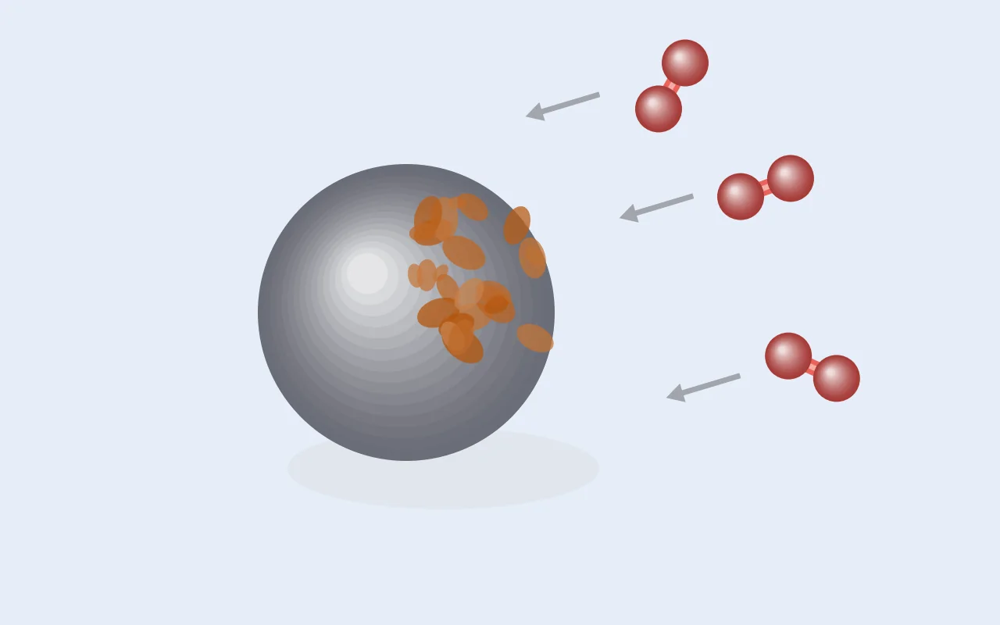

Paper [1] — GGA는 왜 산화 에너지를 틀리나: O₂ 보정과 금속별 U
배터리 계산에서 쓰는 U 값(Mn 3.9 eV 등)이 어디서 왔는지 찾다 보면 Wang, Maxisch, Ceder(2006) 논문에 닿습니다. 세 번에 걸쳐 읽고 남기는 첫 논문 리뷰입니다. DFT 이론 [3]이 이 논문에서 배운 이론의 뼈대를 정리한 글이라면, 이 글은 논문을 처음부터 따라가면서 수치와 그림이 하는 역할, 논증이 쌓이는 순서, 저자들이 직접 밝힌 한계까지 정리한 기록입니다. 길지만 그만큼 읽을 가치가 있는 논문이었습니다.

리뷰 논문
Lei Wang, Thomas Maxisch & Gerbrand Ceder, "Oxidation energies of transition
metal oxides within the GGA+U framework", Physical Review B
73, 195107 (2006).
doi:10.1103/PhysRevB.73.195107
MIT 재료공학과 (Ceder 그룹) · 접수 2005.11.23 / 게재 2006.5.4
0. 세 문장 요약
- GGA로 전이금속 산화물의 산화 에너지를 계산하면 최대 1 eV 넘게 틀리는데, 원인이 하나가 아니라 두 개입니다. O₂ 분자를 너무 안정하게 계산하는 오차와, 3d 전자의 자기상호작용/상관 오차입니다.
- 두 오차는 부호가 반대라서 서로를 가립니다. 저자들은 d 전자가 없는 산화물(MgO, Li₂O 등)만으로 O₂ 오차를 O₂당 1.36 eV로 따로 뽑아냈고, 그걸 걷어낸 뒤 남은 오차를 GGA+U로 처리했습니다.
- 이렇게 얻은 U 값은 금속별로 좁은 범위에 모였고(V 3.1 ~ Ni 6.4 eV), 피팅에 쓰지 않은 밴드갭과 자기모멘트까지 같이 좋아졌습니다. 이 "산소 보정 + 전이금속별 U" 방식이 이후 대규모 소재 계산 데이터베이스의 표준이 됐습니다.
1. 왜 이 논문을 읽어야 하나
금속이나 산화물이 산소와 반응해서 더 높은 산화 상태가 될 때 나오는 에너지를 산화 에너지라고 합니다. 예를 들어 철은 산소에 전자를 내주며 산화되고, 이때 에너지가 나옵니다. 이 에너지가 논문의 주제입니다.
이 값이 왜 중요할까요. 배터리, 촉매, 부식, 야금 정련, 심지어 광합성과 대사까지 전부 산화·환원 반응으로 정해집니다. 그리고 소재 개발 입장에서 중요한 건 이것입니다.
후보 물질 수백~수천 개를 일일이 합성해서 측정할 수는 없으니, 계산으로 미리 걸러 내야 합니다.
특히 리튬이온 배터리 양극재에서는 산화 에너지가 곧 전지 전압입니다. 양극에서 Li⁺ 하나와 전자 하나를 빼서 Li 금속 음극에 붙이는 반응 에너지를 전자 전하로 나누면 평균 전압이 됩니다.
Li_x MO₂ → Li_(x−1) MO₂ + Li(금속)
V_avg = [ E(Li_(x−1)MO₂) + E(Li금속) − E(Li_x MO₂) ] / e
그래서 이 반응 에너지를 1.5 eV 틀리면 4 V 양극재를 2.5 V로 예측하게 됩니다. 순위가 뒤죽박죽이 되니 계산으로 스크리닝한다는 목적 자체가 성립하지 않습니다. 그런데 실제로 GGA가 그 정도로 틀렸습니다. 논문 도입부가 인용하는 숫자가 정확히 4 eV 중 1.5 eV입니다.
2. 배경: DFT의 정확도는 "오차 상쇄"에 기댄다
여기서 많이들 놓치는 전제를 하나 짚고 가겠습니다.
📖 용어 | 오차 상쇄 (error cancellation) GGA로 계산한 절대 총에너지는 진짜 값과 원자당 수 eV씩 차이가 납니다. 그런데 이걸 신경 쓰는 사람은 없습니다. 실제로 쓰는 건 항상 에너지 차이(반응 에너지, 상 안정성, 전압)이기 때문입니다. 반응의 좌변과 우변이 전자 입장에서 비슷한 환경이면, 같은 크기의 오차가 양쪽에 똑같이 얹혀서 빼면 지워집니다. 논문 도입부 표현대로 DFT의 성공은 "in large part due to the cancellation of errors in energy differences"입니다.
같은 조성의 두 결정 구조 중 어느 쪽이 안정한지 비교할 때는 이 상쇄가 거의 완벽하게 작동합니다. 결합 성격도 d 전자 개수도 같으니까요.
그런데 산화·환원은 사정이 다릅니다. 전자가 성격이 완전히 다른 두 장소 사이를 옮겨 가기 때문입니다.
| 반응 종류 | 전자의 출발지 | 전자의 도착지 | 오차 상쇄 |
|---|---|---|---|
| 배터리 (Li 탈리) | 산화물의 국재화된 3d | Li 금속의 퍼진 2s | ❌ |
| O₂ 산화 | 산화물의 3d | O₂ 분자의 π* | ❌ |
| 산화물 → 더 산화된 산화물 | d 전자 n개 상태 | d 전자 n−1개 상태 | ❌ (약하게) |
| 같은 조성의 다형체 비교 | (전자 이동 없음) | — | ✅ |
논문은 이걸 "systematic and noncanceling errors"라고 표현합니다. 계통적이고(무작위가 아니라 평균을 내도 사라지지 않고), 상쇄되지 않는(그래서 계산을 더 정밀하게 해도 줄지 않는) 오차라는 뜻입니다. 보정하지 않으면 절대 사라지지 않는다는 얘기이고, 이 논문이 쓰인 이유이기도 합니다.
3. 범인은 둘이다
3.1 오차 ①: O₂ 분자 과잉결합 (overbinding)
GGA는 O₂ 분자를 실제보다 강하게 묶습니다. 논문에 나온 숫자는 이렇습니다.
| 항목 | 값 |
|---|---|
| GGA 계산 O₂ 결합 에너지 | −6.02 eV |
| 선행 GGA 계산값 (Ref. 31) | −5.99 eV |
| 실험값 | −5.23 eV |
| → 과잉결합 | 0.79 eV |
💡 눈여겨볼 논증 왜 굳이 "선행 GGA 계산값 −5.99 eV"와 비교했을까요? 실험과 비교하는 게 목적이라면 필요 없는 비교입니다. 이건 자기 계산에 실수가 없다는 걸 보여 주는 비교입니다. 컷오프, k-메시, PAW 유사포텐셜, 스핀 편극 중 하나라도 잘못 잡아서 나온 숫자라면 논문 전체를 믿을 수 없게 됩니다. 문헌값을 0.03 eV 안에서 재현했으니 "구현 오차(implementation error)"가 아니라 "방법 오차(method error)"라는 게 확실해집니다. 논문에서 이런 문장을 만나면 저자가 자기 계산을 검증하는 중이라고 읽으면 됩니다.
부호를 따라가 보겠습니다. 반응물 O₂가 실제보다 안정하게(낮게) 계산되면, 거기서 출발해 생성물로 내려가는 낙차가 줄어듭니다. 그래서 계산된 산화 에너지가 실제보다 덜 음수가 됩니다. 논문 표현으로는 "makes calculated oxidation energies less negative than experimental values."입니다.
그리고 중요한 건 이 오차가 O₂ 하나당 일정한 상수라는 점입니다. O₂는 어느 반응에서나 똑같은 O₂이기 때문입니다. 그래서 고치기 쉽습니다.
3.2 오차 ②: 3d 전자의 자기상호작용 / 상관 오차
이쪽이 본질적이고 어렵습니다.
📖 용어 | self-interaction error (SIE, 자기상호작용 오차) 정확한 이론에서는 전자가 자기 자신의 전하와 밀어내는 항(Hartree)이 교환항(exchange)으로 정확히 상쇄됩니다. 전자가 자기 자신을 밀어낼 수는 없으니 당연합니다. 그런데 LDA/GGA는 교환항이 근사값이라 이 상쇄가 불완전합니다. 그래서 전자가 자기 자신의 밀도로부터 가짜 반발력을 느낍니다.
가짜 반발이 있으면 전자는 좁은 곳에 뭉쳐 있기를 싫어합니다. 뭉치면 자기 자신과 겹치는 정도가 커지니까요. 그래서 GGA는 국재화된 상태를 실제보다 불안정하게 계산하고, 전자 밀도를 억지로 퍼뜨립니다. 밴드갭이 실제보다 작게(종종 0으로) 나오는 것도 같은 원인입니다.
📖 용어 | correlation energy (상관 에너지) 교환-상관 에너지에서 교환을 뺀 나머지이고, 평균장(mean-field) 그림이 놓치는 부분 전부를 뜻합니다. 평균장은 전자 하나가 나머지 전자들이 만든 평균 전기장 속에서 움직인다고 보는 근사인데, 실제 전자는 평균이 아니라 그 순간 다른 전자가 정확히 어디 있는지에 반응해서 비켜 갑니다. 그 순간순간 피하는 효과를 빠뜨린 몫이 상관 에너지입니다.
이 논문은 도입부에서는 SIE라고 하고 결과부에서는 correlation error라고 해서 헷갈릴 수 있는데, 같은 문제를 두 방향에서 본 것입니다.
| 관점 | 진단 | 증상 |
|---|---|---|
| SIE | 전자가 자기 자신과 가짜로 반발 | 국재화 상태가 부당하게 불안정 |
| 상관 부족 | 전자가 다른 전자를 피하는 걸 못 담음 | 같은 사이트에 전자를 너무 쉽게 몰아넣음 |
둘 다 결론이 "GGA는 전자를 실제보다 퍼뜨린다"로 같고, 무엇보다 처방도 하나입니다(뒤에 나올 +U 항 하나가 둘을 같이 건드립니다).
3.3 왜 하필 3d인가, U/W 비율
전이금속(Ti, V, Cr, Mn, Fe, Co, Ni, Cu)은 3d 오비탈을 어중간하게 채워 가는 원소들입니다. 그래서 산화 상태가 여러 개 가능합니다. Fe²⁺도 되고 Fe³⁺도 됩니다. 배터리가 작동하는 원리가 바로 이것입니다.
그리고 d 오비탈은 s, p에 비해 좁고 뭉쳐 있습니다. 이걸 정량적으로 보면 두 에너지의 경쟁이 됩니다.
| 기호 | 의미 | 우세할 때 |
|---|---|---|
| W (밴드폭) | 전자가 이웃 원자로 도약해 퍼지려는 경향 | 전자가 퍼짐 → 평균장 OK |
| U (온사이트 쿨롱) | 같은 원자에 전자 둘이 있을 때의 반발 | 전자가 갇힘 → 평균장 붕괴 |
- W ≫ U. 일반 금속(Al, Li의 sp 밴드)입니다. 전자가 넓게 퍼져 있어서 서로 마주칠 확률이 낮습니다. 상관이 약하고 GGA가 잘 맞습니다.
- U ≳ W. 전이금속 산화물의 3d 밴드입니다. 3d는 이웃과 겹침이 작아 밴드폭이 좁은데(수 eV) U는 그와 비슷하거나 더 큽니다. 옆 원자에 전자가 있느냐가 에너지를 좌우합니다. 평균장으로는 원리적으로 담을 수 없는 영역이고, 이런 물질을 강상관계(strongly correlated system)라고 부릅니다.
정리하면 국재화 = 좁은 밴드폭 = 상대적으로 큰 U = 상관이 지배라는 관계입니다.
📖 용어 | hybridization (혼성) 엄밀히 말하면 "산화물 속 금속의 3d 전자"라는 표현은 정확하지 않습니다. 금속의 3d와 산소의 2p는 공간적으로 겹치고 에너지도 비슷해서 서로 섞입니다. 실제 전자 상태는 "금속 d + 산소 p" 혼합물입니다. 논문 표현으로는 "the localized orbitals formed by the metal 3d orbital and oxygen 2p ligands."입니다.
그리고 SIE의 크기가 이 혼성 정도에 따라 크게 달라집니다. 혼성이 약하면(이온적) 전자가 금속에 갇혀 SIE가 크고, 혼성이 강하면(공유결합적) 전자가 주변 산소에 퍼져서 SIE가 작습니다. 물질마다 다르다는 뜻이라 모든 물질에 같은 상수로 보정할 수는 없습니다. 금속마다 다른 U가 필요한 근본적인 이유가 이것입니다.
3.4 그리고 두 오차는 서로를 가린다
이 사실이 논문 전체의 구성을 정했습니다. 두 오차의 부호가 반대입니다.
ΔH를 위로 밀기 ΔH를 아래로 밀기
(덜 음수, 산화 억제) (더 음수, 산화 촉진)
오차 ① O₂ 과잉결합 ●───────────────►
오차 ② 3d SIE ◄───────────────●
합쳐서 관측되는 것 = 일부만 남음
숫자로 예를 들면 이렇습니다(설명용 가상값).
| 낙차에 주는 영향 | |
|---|---|
| O₂ 오차 | +1.4 eV |
| 3d 오차 | −1.0 eV |
| 관측되는 총 오차 | +0.4 eV |
계산 결과를 실험과 비교하면 보이는 건 마지막 줄 하나, +0.4뿐입니다. 이게 (+1.4, −1.0)에서 왔는지 (+0.5, −0.1)에서 왔는지 알 방법이 없습니다. 미지수는 둘인데 식은 하나입니다. 심지어 오차가 작아 보이니 괜찮은 계산이라고 착각할 위험까지 있습니다.
논문 Discussion에 이 위험이 분명하게 적혀 있는데, 제가 보기엔 이 논문에서 가장 인용할 만한 문장입니다.
"Note that if an uncorrected O₂ energy is used, the pure GGA results in Fig. 2 would be in better agreement with experiment, due to the cancellation of two substantial errors... This cancellation is rather arbitrary and cannot be relied upon to get accurate results."
보정하지 않은 GGA가 우연히 더 잘 맞는다는 겁니다. 우연히 맞은 답을 성공으로 착각하면, 두 오차의 크기 비율이 달라지는 새로운 계에서 예측이 틀어집니다. 계산 연구에서 "맞았다"와 "맞을 이유가 있다"를 구분해야 하는 이유를 보여 주는 교과서적인 사례입니다.
4. 방법
4.1 계산 세팅
| 항목 | 값 |
|---|---|
| 코드 | VASP |
| 유사포텐셜 | PAW (projected augmented wave) |
| 범함수 | GGA, 그리고 그 확장인 GGA+U |
| 평면파 컷오프 | 550 eV |
| 수렴 기준 | 총에너지 3 meV / formula unit 이내 |
| 이완 | 모든 원자 좌표 + 격자 벡터 완전 이완 |
| 스핀 | 별도 언급 없으면 전부 스핀 편극 |
| 혼합 원자가 물질 | Co₃O₄, Fe₃O₄, Mn₃O₄는 이온마다 다른 초기 자기모멘트를 부여해 결정 대칭성을 인위적으로 깨서, 전자 바닥상태가 이온 대칭보다 낮은 대칭을 가질 수 있게 허용 |
마지막 항목이 실제로 계산할 때 중요합니다. 혼합 원자가 산화물에서는 같은 결정학적 자리에 Fe²⁺와 Fe³⁺가 섞여 앉는데, 대칭을 강제하면 계산이 그 전하 분리를 찾지 못하고 "평균 원자가"라는 물리적으로 틀린 해에 갇힙니다.
4.2 대상 물질과 자성 구조 (Table I)
| 산화물 | 결정 구조 | 자성 구조 | T_N / T_C (K) |
|---|---|---|---|
| VO, MnO, FeO, CoO, NiO | Fm-3m (rocksalt) | AFM | 125 / 122 / 175 / 289 / 523 |
| CuO | C2/c | AFM | 225 |
| VO₂ | P2₁/c | NM | 340 |
| β-MnO₂ | P4₂/mnm | AFM (실제는 나선형) | 92 |
| NiO₂ | R-3m 또는 C2/m | — | — |
| V₂O₃ | R-3c | AFM | 150 |
| Cr₂O₃ | R-3 | AFM | 310 |
| α-Mn₂O₃ | Pbca | AFM | 90 |
| α-Fe₂O₃ | R-3c | AFM | 953 |
| Mn₃O₄ | I4₁/amd | FM | 42 |
| Fe₃O₄ | Fd-3m | FiM (준강자성) | 860 |
| Co₃O₄ | Fd-3m | AFM | 33 |
| Cu₂O, V₂O₅, CrO₃ | Pn-3m / Pmmn / C2cm | DM (반자성) | — |
- AFM = 반강자성(이웃 스핀이 반대), FM = 강자성, FiM = 준강자성(반대지만 크기가 달라서 알짜 자기모멘트가 있음), NM/DM = 비자성/반자성
- β-MnO₂는 실제로 나선형(helimagnetic) 자성인데, 실용적인 이유로 강자성으로 가정했다고 적혀 있습니다.
- Ti 산화물은 일부러 뺐습니다. 이유는 §7에 나옵니다.
4.3 GGA+U가 실제로 하는 일
📖 용어 | GGA+U 범함수가 아니라 "DFT + 모델 보정" 구조입니다. 먼저 GGA로 전체를 계산하고, 나온 파동함수를 전이금속 자리마다 원자형 d 오비탈에 투영(project)해서 점유 행렬 n을 뽑습니다. 그 점유수에 허바드 모형(Hubbard model)의 에너지 항을 얹습니다. 전체는 제일원리 계산이고, d 부분공간만 골라서 모형 해밀토니안으로 덧붙이는 셈입니다.
논문 식 (1)을 정리하면 본질적으로 이렇습니다(Dudarev 형식, Ref. 11).
E^(GGA+U) = E^(GGA) + (U_eff / 2) · Σᵢ nᵢ(1 − nᵢ)
이 함수가 어떤 성격인지 보겠습니다.
| 점유수 nᵢ | nᵢ(1−nᵢ) | 벌금 |
|---|---|---|
| 0 (완전히 빔) | 0 | 없음 |
| 0.5 (반쯤 뭉개짐) | 0.25 | 최대 |
| 1 (완전히 참) | 0 | 없음 |
그러니까 이 항은 점유수를 0이나 1로 몰아가는 항입니다. 0.4, 0.6처럼 어중간하게 흐릿하게 퍼진 상태에 벌점을 줍니다.
이게 딱 필요한 보정인 이유는 GGA의 문제가 점유수를 뭉개는 것이었기 때문입니다. SIE 때문에 전자가 한 자리에 온전히 앉기를 싫어해서 여러 자리에 0.5씩 나눠 앉으려고 합니다. 식 (1)은 그렇게 뭉개는 데 벌점을 줘서 전자를 제자리에 앉힙니다.
스펙트럼으로 보면 같은 항이 점유된 d 준위를 U/2 내리고 빈 준위를 U/2 올립니다. 그래서 밴드갭이 대략 U만큼 열립니다. 에너지로 보면 분수 점유에 대한 벌점이고, 스펙트럼으로 보면 갭을 여는 것인데, 둘은 같은 항을 다르게 본 것입니다.
파라미터는 이렇습니다. - Ū = 같은 자리의 쿨롱 반발(구면 평균), J̄ = 훈트 교환 결합 - 실제로 들어가는 건 둘의 차이인 U_eff = Ū − J̄ 하나뿐입니다. 논문도 "The calculated total energies are insensitive to J̄ when U_eff is fixed"라고 적었습니다. 실제로 "U를 4로 줬다"고 하면 거의 항상 U_eff를 말합니다.
4.4 대상 반응을 고른 방식, 도구의 유효 범위에 주장을 맞추기
논문이 다루는 반응은 식 (2)의 형태입니다.
MOₓ + (y−x)/2 · O₂ → MO_y
ΔH_o = [ E(MO_y) − E(MOₓ) − (y−x)/2 · E(O₂) ] / [ (y−x)/2 ] ... 식 (3)
양쪽이 모두 산화물입니다. 원소 금속에서 출발하는 생성 반응(Fe + O₂ → Fe₂O₃)의 실험 데이터가 훨씬 많은데도 그쪽을 피했습니다. 왜 그랬을까요?
+U는 금속에는 쓸 수 없기 때문입니다. 금속에서는 d 상태가 넓은 밴드를 이루고 분수 점유가 계산의 결함이 아니라 실제 물리입니다. 페르미 준위를 가로지르는 밴드는 원래 점유수가 어중간합니다. 그런데 식 (1)은 분수 점유에 무조건 벌점을 주니, 금속에 걸면 없는 갭을 억지로 열고 국재화되지 않은 전자를 억지로 가둡니다. 고치는 게 아니라 새 오차를 만드는 겁니다.
이 결정의 흔적이 논문 곳곳에 남아 있습니다.
- 제목이 "formation energies"가 아니라 "oxidation energies"입니다.
- Fig. 1과 Fig. 2의 역할 분담. Fig. 1은 금속 → 산화물이지만 순수 GGA(U 없음)이고, O₂ 보정값을 뽑는 데만 씁니다. Fig. 2는 산화물 → 산화물이고 여기서만 U를 켭니다. 금속이 나오는 곳에는 U를 쓰지 않는다는 원칙이 그림 구성에 그대로 반영돼 있습니다.
- Fig. 2의 반응식은 예외 없이 산화물끼리입니다.
2VO+O₂→2VO₂,2Cr₂O₃+3O₂→4CrO₃,4FeO+O₂→2Fe₂O₃, ...
범위를 좁히면 당연히 반박이 나옵니다. "양쪽이 다 산화물이면 환경이 비슷해서 오차가 상쇄되니, 애초에 연구할 오차가 안 남는 것 아니냐?" 논문은 바로 그 자리에서 답합니다. 이 반응들도 금속 3d에서 산소 2p로 전자가 이동하니 국재화된 d 전자의 개수가 여전히 달라지고, 그래서 오차가 남아 있다는 겁니다.
논문에서 방법 부분을 읽을 때는 이런 짝을 찾아보면 좋습니다. 무엇을 포기했는지(금속 반응), 그리고 포기하고도 현상이 남아 있다는 걸 어떻게 보이는지(d 전자 개수 변화)입니다.
5. 결과 ①: O₂ 보정값 뽑기 (Fig. 1)
5.1 정규화가 이 결과를 성립시킨다
Fig. 1의 y축은 그냥 생성 에너지가 아니라 반응에 참여한 O₂ 하나당 생성 에너지입니다(식 3의 분모).
이게 중요합니다. 잡으려는 오차가 O₂ 하나당 생기니, Al₂O₃(O₂ 1.5개 소비)에는 오차가 1.5배, Li₂O(0.5개)에는 0.5배로 들어갑니다. 화학식 단위당으로 그렸다면 이 오차가 화학양론에 비례해서 흩어져 그냥 산포처럼 보였을 겁니다. O₂당으로 나누면 이 배율이 정확히 상쇄돼서, 오차가 모든 물질에서 같은 크기의 수직 이동으로 나타납니다. 보기 좋게 그리려는 게 아니라 가설을 확인할 수 있는 형태로 만드는 작업입니다.
5.2 그래프의 기하학이 곧 가설 검정
계산값(y)과 실험값(x)을 비교하는 그래프(parity plot)에서는 이렇게 읽습니다.
| 데이터 모양 | 의미 |
|---|---|
| 대각선 y = x 위 | 완벽 일치 |
| 기울기 1, 절편만 이동 | 상수 오차 ← 저자들의 가설 |
| 기울기 ≠ 1 | 비례 오차 |
| 흩어짐 | 계통성 없음 |
저자들의 가설은 O₂ 오차가 상수라는 것이었고, 그렇다면 비전이금속 산화물 데이터는 기울기 1의 직선 위에 놓여야 합니다. 기울기가 1.2쯤 나왔다면 상수 가설은 바로 기각됐을 겁니다.
실제로 Fig. 1 inset에서 Li₂O, Na₂O, MgO, CaO, Al₂O₃가 대각선과 평행한 선 위에 나란히 놓였습니다. 가설은 통과했고, 그 절편이 바로 보정값입니다.
5.3 얻은 값과 남는 잔차
| 항목 | 값 |
|---|---|
| Fig. 1 fitting으로 얻은 상수 이동 | −1.36 eV / O₂ |
| O₂ 과잉결합만으로 설명되는 양 | 0.79 eV |
| 설명되지 않고 남는 양 | 약 0.57 eV |
저자들은 이 잔차를 숨기지 않고 적어 두고, 원인도 추정합니다. O₂가 O²⁻로 바뀔 때 산소 p 오비탈에 전자를 넣는 과정의 GGA 오차라는 겁니다.
근거가 있는 추정입니다. DFT에서 음이온은 다루기 어렵기로 유명합니다. 고립된 O⁻나 O²⁻는 대부분의 범함수에서 결합조차 하지 않습니다. SIE 때문에 여분의 전자가 튀어 나가 버립니다. 고체 안에서는 마델룽 전기장이 붙잡아 주지만, 전자를 산소에 얹는 에너지 자체의 오차는 남습니다. 그래서 저자들은 결합 에너지 차이(0.79)로 보정하지 않고, 일부러 실험 생성 엔탈피에 피팅해서 이 산소 p 상관 오차까지 함께 포함시키는 방식을 택했다고 Discussion에서 밝힙니다.
여기서 개념적으로 중요한 결론이 나옵니다. 흔히 "O₂ 보정"이라고 부르는 1.36 eV는 사실 두 가지가 합쳐진 값입니다.
| 성분 | 크기 | 사는 곳 |
|---|---|---|
| O₂ 분자 과잉결합 | ~0.79 eV | 반응물 (기체 분자) |
| O²⁻ 형성 오차 | ~0.57 eV | 생성물 (고체 속 산소) |
이름은 O₂ 보정인데 절반 가까이는 산화물 쪽 산소에서 옵니다. 그래서 후속 연구들은 이걸 O₂ 에너지 수정이 아니라 경험적 음이온 보정(anion correction)으로 다루고, 대규모 계산 DB들은 이 보정을 산화물 속 산소 원자당 값(1.36을 2로 나눈 ~0.7 eV 수준)으로 구현합니다. 보정을 어디에 적용하느냐가 다른 겁니다.
5.4 SiO₂ 이탈이 이 단락의 가장 강한 증거다
논문이 한 문장으로 슬쩍 지나가는 부분이 있습니다. "The minor deviation of SiO₂ from the constant shift can be attributed to the high Si–O bond covalency in that oxide." 그런데 이게 사실 §5.3 주장의 가장 강한 증거입니다.
논리를 따라가 보겠습니다. 1.36 eV가 전부 O₂ 분자에서만 왔다면, 산화물 쪽 결합이 이온성이든 공유성이든 상관없어야 합니다. O₂는 어느 반응에서나 똑같은 O₂이니 비전이금속 산화물은 예외 없이 직선 위에 놓여야 합니다.
그런데 실제로 벗어난 건 가장 공유결합적인 산화물 하나였습니다. 공유결합에서는 산소가 전자 2개를 온전히 받지 않고 일부만 받으니, "O²⁻ 형성 오차" 성분이 작아져서 상수 이동에서 벗어난 겁니다.
어느 물질이 벗어났는지가 메커니즘을 가리킵니다. 벗어난 게 MgO였다면 저자들의 설명은 성립하지 않았을 겁니다. 논문에서 예외를 볼 때 늘 왜 하필 이 물질이 예외인지 물어봐야 하는 이유입니다. 예외가 보여 주는 패턴이 본론보다 더 많은 걸 알려 줄 때가 많습니다.
5.5 실전 적용 시 부호
계산값이 실험보다 O₂당 1.36 eV 덜 음수이니, 보정은 계산 생성 에너지를 O₂당 1.36 eV 내리는 것이고, 이건 곧
E(O₂)_보정 = E(O₂)_GGA + 1.36 eV
로 O₂ 기준 에너지를 올려 주는 것과 같습니다. O₂가 너무 안정하게 계산됐으니 올려 준다고 기억하면 방향을 헷갈리지 않습니다.
6. 결과 ②: U 결정 (Fig. 2)
O₂ 보정을 걷어 내고 나면 남은 어긋남은 순수하게 3d 때문입니다. 그리고 이때 부호가 뒤집힙니다.
- 보정 전(Fig. 1, 금속→산화물): GGA가 산화 에너지를 작게 평가
- 보정 후(Fig. 2, U=0): GGA가 산화 에너지를 크게 평가, 최대 1 eV
이렇게 부호가 뒤집히는 게 오히려 보정이 제대로 작동했다는 증거입니다. 가려져 있던 두 번째 오차가 드러난 겁니다. 논문 표현으로는 "all GGA oxidation energies are too negative, indicating that GGA penalizes the reduced state where more 3d orbitals are filled."입니다.
U를 켜면 왜 고쳐질까요. GGA에서는 국재화된 d 전자 하나하나가 가짜 자기반발 벌점을 지고 있고, +U가 그 벌점을 보상해 줍니다. 그러니 국재화된 d 전자가 많은 쪽(환원 상태)이 보상을 더 많이 받아서 더 안정해집니다. 그러면 ΔH = E(산화물) − E(환원물)에서 빼는 항이 낮아지니 ΔH가 덜 음수가 됩니다. Fig. 2의 곡선이 전부 U가 커질수록 위로 올라가는 게 이 때문이고, 실험값 수평선과 만나는 지점이 그 금속의 U입니다.
6.1 Fig. 2에서 얻은 U
| 금속 | 조사한 반응 | 실험값에 맞는 U (eV) |
|---|---|---|
| V | 2VO+O₂→2VO₂, 4/3VO+O₂→2/3V₂O₃, 2V₂O₃+O₂→4VO₂ |
3.0 – 3.3 |
| Cr | 2Cr₂O₃+3O₂→4CrO₃ |
3.5 |
| Mn | 4MnO+O₂→2Mn₂O₃, 6MnO+O₂→2Mn₃O₄, 2MnO+O₂→2MnO₂ |
3.5 – 4.0 |
| Fe | 4FeO+O₂→2Fe₂O₃, 6FeO+O₂→2Fe₃O₄ |
3.9 – 4.1 |
| Co | 6CoO+O₂→2Co₃O₄ |
3.3 |
| Ni | 2NiO+O₂→2NiO₂ |
6.4 |
| Cu | 2Cu₂O+O₂→4CuO |
4.0 |
6.2 여기가 이 논문의 핵심 주장이다
V, Mn, Fe는 산화 반응이 여러 개 있습니다(예: VO → V₂O₃ → VO₂ → V₂O₅). U가 그냥 맞추기 위한 숫자라면 반응마다 전혀 다른 U가 필요했을 겁니다.
그런데 한 금속 안에서는 U가 좁은 범위에 모였습니다. V는 3.0–3.3(폭 0.3), Fe는 3.9–4.1(폭 0.2)입니다. 논문 표현으로는 "The U values that bring the calculated oxidation energies in agreement with experimental results are remarkably consistent for a given transition metal, which implies that the U values of different oxidation states may lie close together."입니다.
실제로 쓸 때 이게 중요합니다. 산화 상태가 달라져도 U가 거의 같다면, 한 번 정한 U를 그 금속의 다른 화합물이나 다른 산화 단계에 그대로 가져다 쓸 수 있습니다. 논문이 "This could make the GGA+U with the U values fitted here of practical value in predicting the potential and energy of redox processes more accurately"라고 쓴 게 이 얘기입니다. 실제로 이후 대규모 계산 DB가 전이금속별 U 표를 유지하는 근거가 여기서 나왔습니다.
7. 결과 ③: 독립 검증 (Table II), 이게 없으면 그냥 커브 피팅이다
논문을 얼마나 믿을 수 있는지가 여기서 갈립니다. 산화 에너지 하나에 맞춰 뽑은 U가 피팅에 전혀 쓰지 않은 다른 관측량도 좋아지게 하는지 확인합니다.
논문이 쓴 U(Table II, 물질계마다 같은 값 적용)입니다.
| 금속계 | U (eV) |
|---|---|
| V | 3.1 |
| Cr | 3.5 |
| Mn | 4.0 |
| Fe | 4.0 |
| Co | 3.3 |
| Ni | 6.4 |
| Cu | 4.0 |
7.1 밴드갭 E_g (eV)
| 산화물 | GGA | GGA+U | 실험 | 평가 |
|---|---|---|---|---|
| FeO | 0 | 2.2 | 2.4 | ✅ 금속 → 절연체 |
| CoO | 0 | 2.0 | 2.4 | ✅ 금속 → 절연체 |
| NiO | 0.6 | 3.4 | 4 | ✅ 대폭 개선 |
| MnO | 1.5 | 3.2 | — | ✅ |
| VO | 0.6 | 2.4 | — | — |
| VO₂ | 0.1 | 0.8 | 0.7 | ✅ 거의 일치 |
| Cr₂O₃ | 1.0 | 2.8 | 3.4 | ✅ |
| α-Fe₂O₃ | 0.5 | 1.8 | 2.0 – 2.7 | ✅ |
| Co₃O₄ | 0.7 | 1.6 | 1.6 | ✅ 정확히 일치 |
| V₂O₅ | 1.6 | 2.1 | 2.0 | ✅ |
| CrO₃ | 1.7 | 1.8 | — | — |
| α-Mn₂O₃ | 0 | 0.5 | — | △ |
| β-MnO₂ | 0 | 0 | — | ❌ 갭 안 열림 |
| CuO | 0 | 0.5 | 1.4 | ❌ 크게 부족 |
| Cu₂O | 0.4 | 0.6 | 2.4 | ❌ 크게 부족 |
| Fe₃O₄ | 0 | 1.7 | 0.07 | ❌ 과보정 |
눈여겨볼 점: FeO, CoO는 GGA에서 밴드갭이 0, 그러니까 금속으로 나옵니다. 실제로는 2 eV대의 절연체입니다. 단순한 수치 오차가 아니라 물질의 종류 자체를 틀리게 예측한 것입니다. +U가 이걸 바로잡았습니다.
7.2 자기모멘트 M (μ_B / 전이금속 원자)
| 산화물 | GGA | GGA+U | 실험 |
|---|---|---|---|
| MnO | 4.39 | 4.65 | 4.58 – 4.79 |
| FeO | 3.43 | 3.69 | 3.32 |
| CoO | 2.37 | 2.65 | 3.35 – 3.8 |
| NiO | 1.32 | 1.72 | 1.64 – 1.90 |
| CuO | 0 | 0.53 | 0.68 |
| V₂O₃ | 1.38 | 1.85 | 1.2 |
| Cr₂O₃ | 2.63 | 2.90 | 3.8 |
| α-Mn₂O₃ | 3.56 | 3.92 | 3.4 – 3.9 |
| α-Fe₂O₃ | 3.58 | 4.14 | 4.9 |
| β-MnO₂ | 2.74 | 3.24 | 1.84 – 2.35 ❌ |
| Fe₃O₄ (A / B) | 3.54 / 3.60 | 4.06 / 3.64 | 4 |
| Co₃O₄ (A / B) | 2.39 / 0.11 | 2.67 / 0.07 | 3.02 |
전반적으로 +U가 자기모멘트를 실험값 쪽으로 끌어올립니다. 방향이 일관된 것도 중요합니다. SIE가 전자를 퍼뜨려서 국재 모멘트를 줄이고 있었고, +U가 국재화를 되돌리니 모멘트가 커지는 겁니다. CuO가 0(비자성)에서 0.53(실험 0.68)으로 살아나는 게 특히 인상적입니다.
7.3 이 표가 왜 결정적인가
U는 산화 에너지 하나에 맞춰 뽑은 값입니다. 밴드갭과 자기모멘트는 피팅에 전혀 쓰지 않았습니다. 그런데 같은 U로 이것들도 좋아집니다.
U가 그냥 곡선 맞추기용 변수였다면 이런 일이 생길 이유가 없습니다. 관측량 하나에 맞춘 파라미터가 물리적으로 상관없는 다른 관측량까지 고친다면, 그 파라미터가 실제 물리(전자 국재화)를 담고 있다는 뜻입니다. 초록의 "reasonable and consistent values of U"라는 표현이 사실 이 표를 가리킵니다.
논문의 논증 구조를 정리하면 이렇습니다.
| 단계 | 내용 | 근거 |
|---|---|---|
| ① 귀속 (가설) | 남은 오차는 3d 상관 오차다 | "We believe...", 증명 아님 |
| ② 처방 (피팅) | U를 맞춘다 | Fig. 2 |
| ③ 검증 (독립 관측) | 같은 U가 밴드갭·자기모멘트도 고친다 | Table II |
③이 없으면 ②는 그냥 곡선 맞추기입니다.
8. 한계와 경계, 저자들이 스스로 그은 선
좋은 논문은 안 되는 걸 분명히 적어 둡니다. 이 논문은 그걸 꽤 성실하게 합니다.
8.1 투영 오비탈의 임의성, U는 코드 사이에서 전이되지 않는다
논문 본문에는 이렇게 적혀 있습니다. "it suffers somewhat from the arbitrary nature of the projection orbitals, which are atomiclike, rather than the true one-electron orbitals."
핵심 문제는 "d 전자"가 하나로 정의되지 않는다는 점입니다. 실제 코온-샴 상태는 금속 d와 산소 2p가 섞인 혼성 오비탈인데, 거기서 d 성분만 떼어 내려면 기준을 정해야 합니다. 원자형 오비탈의 반경, PAW 구 반경, 바니어 함수, LMTO 부분파 같은 것들입니다. 무엇을 고르느냐에 따라 점유 행렬이 달라지고, 그러면 E_U도 달라집니다.
⚠️ 실무 주의 이 논문의 U 값을 그대로 쓰려면 같은 구현(VASP + PAW + 이 논문의 투영 방식)을 써야 합니다. 다른 코드나 다른 투영자에서의 U = 4.0 eV는 같은 물리를 뜻하지 않습니다. 논문이 §4.1의 설정을 꼼꼼히 적어 둔 이유, 그리고 이 값들이 특정 워크플로와 묶여서 퍼진 이유가 이것입니다.
8.2 금속에는 쓸 수 없다, Ti 산화물 제외
논문은 Ti 산화물을 아예 다루지 않았고, 이유를 이렇게 밝힙니다. "Ti oxides have weakly localized d-orbital electrons, and when reduced are almost always metallic, where GGA+U might not be an appropriate approach."
| 방식 | 가정 | 적합 대상 |
|---|---|---|
| FLL (fully localized limit). 이 논문이 쓴 것 | 점유수가 정수에 가깝다 | 강상관 절연체 |
| AMF (around mean field) | 점유수가 평균값 근처다 | 약상관 금속 (Fe₃Al, FeAl 등, Refs. 42–44) |
Ti는 3d 전자가 적고 퍼져 있어서 FLL 가정이 깨집니다. 다룰 수 없는 걸 억지로 다루지 않고 범위에서 빼는 것이 정직한 처리입니다.
8.3 Cu는 구조적으로 안 된다
CuO(0.5 vs 1.4 eV)와 Cu₂O(0.6 vs 2.4 eV)의 밴드갭은 +U로도 크게 모자랍니다. 논문도 "The electronic structure of Cu oxides is challenging and it is not surprising that even GGA+U does not obtain good band gaps"라고 인정합니다.
배경을 조금 덧붙이면, 뒤쪽 전이금속으로 갈수록 금속 d 준위가 산소 2p에 가까워져서 혼성이 아주 강해지고, 정공이 사실상 산소에 앉습니다(전하이동형 절연체). 원자형 d에 U를 걸어서 고칠 수 있는 문제의 범위를 벗어난 경우입니다. §8.1의 투영 문제가 가장 심하게 드러나는 곳이기도 합니다.
8.4 Fe₃O₄는 과보정된다
밴드갭이 GGA 0 → GGA+U 1.7 eV인데 실험값은 0.07 eV입니다. 거의 금속에 가까운 물질을 절연체로 만들어 버렸습니다. 논문은 A/B 자리 사이의 비화학양론과 전하 무질서(charge disorder) 때문일 수 있다고 추정합니다. 혼합 원자가 스피넬은 +U로도 풀기 어려운 문제로 남아 있습니다.
8.5 0 K 계산 vs 상온 실험
계산은 0 K이고 실험 생성 엔탈피는 상온 값입니다. 저자들이 열용량을 적분해서 이 차이를 직접 확인했습니다.
| 항목 | 값 |
|---|---|
| 일반적인 0 K ↔ 상온 엔탈피 차이 | < 10 kJ/mol O₂ (= 100 meV/분자) |
| 예: VO → VO₂ | 5.77 kJ/mol O₂ |
| 예외: 6CoO + O₂ → 2Co₃O₄ | 28 kJ/mol O₂ |
1.36 eV(≈131 kJ/mol)에 비하면 대부분 무시할 만한 크기입니다. 다만 Co₃O₄ 반응은 예외라서, 이걸 반영하면 Co의 U가 3.3 → 3.5 eV로 바뀐다고 적어 뒀습니다. 이런 걸 각주로 숨기지 않고 본문에 쓰는 점이 좋았습니다.
8.6 준경험적(semiempirical)이라는 사실
보정값 1.36 eV는 실험 생성 엔탈피에 피팅한 값이고, U도 실험 산화 에너지에 맞춘 값입니다. 저자들도 결론에서 인정합니다. "Although GGA+U is semiempirical in nature, it has been found to improve the accuracy in predicting the energetics of redox processes from first principles."
그리고 전제 조건이 붙습니다. 이 상수는 기체 O₂를 기준으로 하는 반응에만 그대로 쓸 수 있습니다. 결론부에 이런 경고가 있습니다.
"GGA will be considerably more in error when calculating reactions where 3d metals (oxides) are oxidized by means other than oxygen."
U 값 역시 산화물 → 산화물 반응으로 보정한 값입니다. 인산염·불화물·황화물처럼 음이온 환경이 다르면 따로 보정해야 할 수 있고, 실제로 후속 연구들에서 그렇게 확인됐습니다.
9. 유산, 왜 20년 뒤에도 인용되는가
이 논문이 남긴 건 사실 아주 단순한 두 줄짜리 방법입니다.
1. 산소 기준 에너지에 상수 보정을 넣는다 (O₂당 ~1.36 eV, 또는 산소 원자당 ~0.7 eV)
2. 전이금속별로 정해진 U를 적용한다 (V 3.1 / Cr 3.5 / Mn 4.0 / Fe 4.0 / Co 3.3 / Ni 6.4 / Cu 4.0)
이 두 줄이 대규모 계산 소재 데이터베이스(Materials Project 등)가 산화물의 형성 에너지·상평형·전압을 계산할 때 쓰는 보정 방식의 직접적인 원조입니다. 배터리 양극재 전압 예측이 실험과 맞게 된 것도 이 보정 덕이 큽니다.
방법론에서 배울 점을 정리하면 이렇습니다.
- 오차가 여럿이면 하나씩 끄고 재 봅니다. 이 논문은 변수 통제를 양쪽 방향으로 했습니다.
| 목적 | 사용한 계 | 꺼진 오차 | 얻은 것 |
|---|---|---|---|
| 오차 ① 측정 | 비전이금속 산화물 (d 전자 없음) | 오차 ② | O₂당 1.36 eV |
| 오차 ② 확인 | 전기화학 반응 (산화제가 Li 금속) | 오차 ① | 4 eV 중 1.5 eV → 실재 확인 |
-
순환논리를 피하려면 데이터를 나눠 씁니다. 보정값을 뽑은 데이터(비전이금속 산화물)와 측정 대상(전이금속 산화물)이 완전히 분리돼 있습니다.
-
피팅한 파라미터는 독립적인 관측량으로 검증합니다. Table II가 없었다면 이 논문은 곡선 맞추기였을 겁니다.
-
우연히 맞은 답을 성공으로 착각하지 않습니다. 보정 없는 GGA가 더 잘 맞는다는 §3.4의 경고가 이 논문에서 가장 널리 인용될 만한 문장입니다.
-
주장의 범위를 도구가 통하는 범위에 맞춥니다. +U가 금속에서 통하지 않는다는 걸 알았기 때문에 반응을 산화물 → 산화물로 제한하고 Ti를 뺐습니다.
10. 용어 사전 (빨리 찾아보기)
| 용어 | 한 줄 정리 |
|---|---|
| LDA / GGA | DFT에서 모르는 조각(교환-상관 에너지)을 근사하는 방식. 부드럽게 뭉개는 성격이라 좁게 국재화된 d 전자에서 티가 난다. |
| self-interaction error (SIE) | 근사 교환항 때문에 전자가 자기 자신의 밀도에서 가짜 반발을 느끼는 오류. 결과적으로 전자를 실제보다 퍼뜨리고 밴드갭을 축소시킨다. |
| correlation energy | 평균장 그림이 놓치는 전자 간 실시간 회피 효과. 좁은 밴드(국재화)에서 지배적이 된다. |
| hybridization (혼성) | 금속 3d와 산소 2p가 섞여 실제 전자 상태를 만드는 것. SIE의 크기를 좌우하므로, 오차가 물질마다 다른 근본 원인. |
| U (Hubbard U) | 같은 사이트에 전자를 하나 더 얹을 때의 쿨롱 페널티. 실제로 쓰는 값은 U_eff = Ū − J̄. |
| J (Hund 결합) | 같은 사이트에서 스핀을 나란히 맞추려는 교환 결합. Dudarev 형식에서는 U와의 차이로만 들어온다. |
| GGA+U | 범함수가 아니라 "DFT + d 부분공간에 얹은 허바드 모형 패치". 분수 점유에 벌금을 물려 국재화를 복원한다. |
| FLL / AMF | +U의 두 변종. FLL은 정수 점유(강상관 절연체)용, AMF는 평균 점유 근처(약상관 금속)용. 이 논문은 FLL. |
| overbinding | 분자를 실제보다 강하게 결합된 것으로 계산하는 것. GGA의 O₂가 대표 사례(−6.02 vs 실험 −5.23 eV). |
| parity plot | 계산값 vs 실험값 산점도. 기울기와 절편의 기하학이 곧 오차 구조의 진단이 된다. |
| noncanceling error | 반응의 좌우변에서 오차가 서로 지워지지 않고 남는 것. 전자가 성격이 크게 다른 환경 사이를 이동할 때 발생. |
| AFM / FM / FiM / NM·DM | 반강자성 / 강자성 / 준강자성 / 비자성·반자성. |
11. 다음에 읽을 것
- F. Zhou, M. Cococcioni, C. A. Marianetti, D. Morgan, G. Ceder, PRB 70, 235121 (2004). 이 논문의 바로 앞 연구입니다. LDA+U로 산화환원 전위(배터리 전압)를 예측했습니다. 배터리 쪽에 관심이 있으면 이걸 먼저 보시면 됩니다.
- S. L. Dudarev et al., PRB 57, 1505 (1998). 이 논문이 쓴 +U 형식(식 1)의 원전입니다.
- V. I. Anisimov, J. Zaanen, O. K. Andersen, PRB 44, 943 (1991). LDA+U의 원논문입니다.
- A. Rohrbach, J. Hafner, G. Kresse, J. Phys.: Condens. Matter 15, 979 (2003). LDA+U와 GGA+U를 비교한 논문입니다.
- B. Hammer, L. B. Hansen, J. K. Nørskov, PRB 59, 7413 (1999). GGA의 O₂ 과잉결합 문제를 다룬 고전(RPBE)입니다.
본 리뷰는 Wang, Maxisch, Ceder, PRB 73, 195107 (2006)의 내용을 정리한 것이며, 인용된 수치는 모두 원논문의 Table I, Table II, Fig. 1, Fig. 2 및 본문에서 가져왔습니다. §8.3의 전하이동형 절연체 관련 부연과 §9의 후속 연구 언급은 원논문 범위를 넘어선 리뷰어의 보충입니다.

Seok
연구하면서 개발합니다. 배터리 재료를 원자 단위에서 계산하는 법을 바닥부터 배우는 중입니다. → 논문 리뷰 더 보기